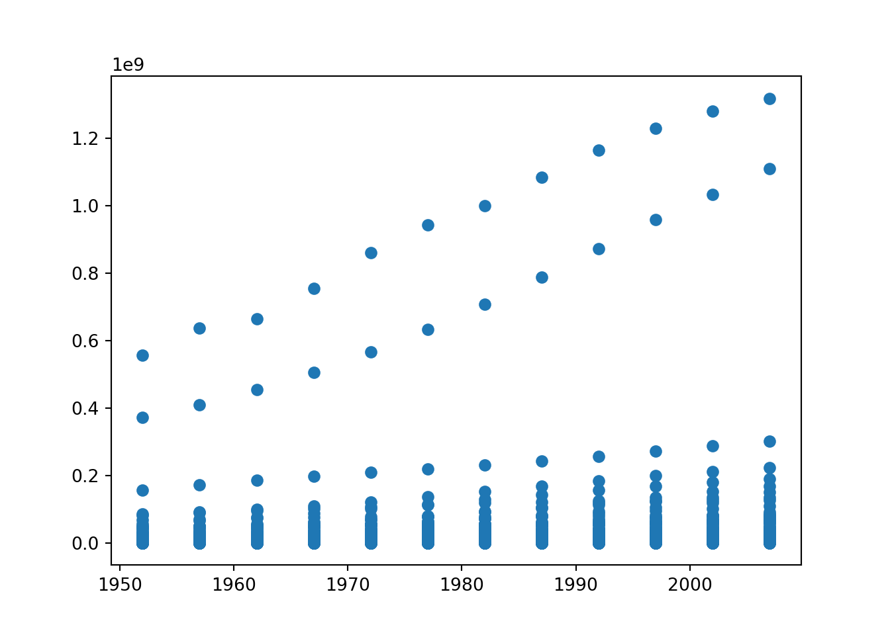
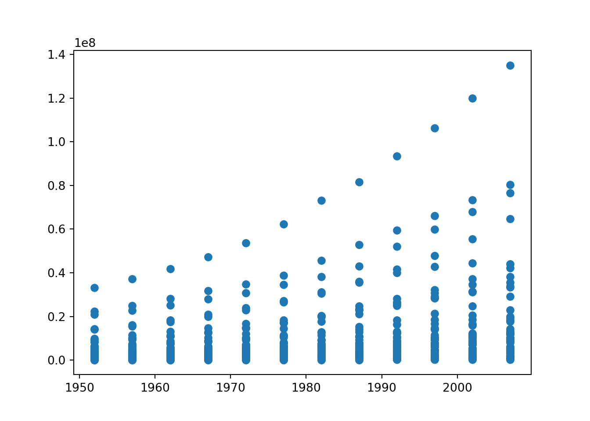

So far we have looked at cleaning, summarizing, and subsetting data, with some minor calculations, but we haven’t yet looked at analyzing our data.
Python is a very powerful tool for data analysis. Similarly to R, we can fit linear models and view graphs. First, we will look at some basic data analysis processes in Python.
Let’s re-load in our Gapminder data:
import pandas as pd
url = 'https://raw.githubusercontent.com/jstaf/gapminder/master/gapminder/gapminder.csv'
df = pd.read_csv(url)Let’s say we want to fit a linear model to see if there is a relationship between population and time. First, let’s do this with the entire dataset with all countries.
import statsmodels.api as sm
# define our x and y variables for clarity
y = df['pop']
x = df['year']
x = sm.add_constant(x)
model = sm.OLS(y,x).fit()
model.summary()| Dep. Variable: | pop | R-squared: | 0.007 |
|---|---|---|---|
| Model: | OLS | Adj. R-squared: | 0.006 |
| Method: | Least Squares | F-statistic: | 11.61 |
| Date: | Fri, 24 Mar 2023 | Prob (F-statistic): | 0.000672 |
| Time: | 11:15:11 | Log-Likelihood: | -33902. |
| No. Observations: | 1704 | AIC: | 6.781e+04 |
| Df Residuals: | 1702 | BIC: | 6.782e+04 |
| Df Model: | 1 | ||
| Covariance Type: | nonrobust |
| coef | std err | t | P>|t| | [0.025 | 0.975] | |
|---|---|---|---|---|---|---|
| const | -9.722e+08 | 2.94e+08 | -3.306 | 0.001 | -1.55e+09 | -3.95e+08 |
| year | 5.061e+05 | 1.49e+05 | 3.407 | 0.001 | 2.15e+05 | 7.97e+05 |
| Omnibus: | 2403.823 | Durbin-Watson: | 0.187 |
|---|---|---|---|
| Prob(Omnibus): | 0.000 | Jarque-Bera (JB): | 438354.240 |
| Skew: | 8.286 | Prob(JB): | 0.00 |
| Kurtosis: | 79.807 | Cond. No. | 2.27e+05 |
There is a lot of information automatically calculated for us above. If we see the R squared value, it is very low, which is bad, because it means that our model is not explaining most of the variability in population.
If we look at the p-values for the coefficient year, it is significant, which is a good sign.
If we wanted the equation for this model, it would be:
Population = 506,100 * Year - 972,200,000
If we look at a scatter plot, we can visualize why our linear model isn’t the best.
import matplotlib.pyplot as plt
plt.scatter(x = df['year'], y = df['pop'])
We see that there are some countries that have a positive linear relationship with time and population, but not all, which could be why our model isn’t fitting perfectly.
Let’s try fitting another linear model, but using only data from Africa.
df_AF = df[df['continent'] == 'Africa']
df_AF.head()## country continent year lifeExp pop gdpPercap
## 24 Algeria Africa 1952 43.077 9279525 2449.008185
## 25 Algeria Africa 1957 45.685 10270856 3013.976023
## 26 Algeria Africa 1962 48.303 11000948 2550.816880
## 27 Algeria Africa 1967 51.407 12760499 3246.991771
## 28 Algeria Africa 1972 54.518 14760787 4182.663766y = df_AF['pop']
x = df_AF['year']
x = sm.add_constant(x)
model1 = sm.OLS(y,x).fit()
model1.summary()| Dep. Variable: | pop | R-squared: | 0.074 |
|---|---|---|---|
| Model: | OLS | Adj. R-squared: | 0.072 |
| Method: | Least Squares | F-statistic: | 49.66 |
| Date: | Fri, 24 Mar 2023 | Prob (F-statistic): | 4.87e-12 |
| Time: | 11:15:16 | Log-Likelihood: | -11192. |
| No. Observations: | 624 | AIC: | 2.239e+04 |
| Df Residuals: | 622 | BIC: | 2.240e+04 |
| Df Model: | 1 | ||
| Covariance Type: | nonrobust |
| coef | std err | t | P>|t| | [0.025 | 0.975] | |
|---|---|---|---|---|---|---|
| const | -4.728e+08 | 6.85e+07 | -6.902 | 0.000 | -6.07e+08 | -3.38e+08 |
| year | 2.438e+05 | 3.46e+04 | 7.047 | 0.000 | 1.76e+05 | 3.12e+05 |
| Omnibus: | 477.344 | Durbin-Watson: | 0.284 |
|---|---|---|---|
| Prob(Omnibus): | 0.000 | Jarque-Bera (JB): | 7771.738 |
| Skew: | 3.336 | Prob(JB): | 0.00 |
| Kurtosis: | 18.950 | Cond. No. | 2.27e+05 |
Again, let’s see how this data appears on a scatter plot.
plt.scatter(x = df_AF['year'], y = df_AF['pop'])
Next, we’ll take a look at more visualization tools available in Python.